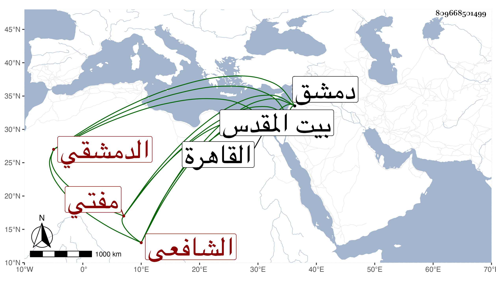

0902Sakhawi.DawLamic.ITO20230111-ara1.EIS1600.809668501499
Biography ID: 809668501499
347
محمد بن إسماعيل بن محمد الشمس بن العماد الدمشقي الشافعي ويعرف أبوه بابن السيوفي ثم هو بابن خطيب جامع السقيفة مفتي الشافعية بدمشق ووالد الصدر محمد . ممن سمع في سنة تسع وخمسين مع أبيه وهو صغير معنا على بعض الشيوخ وحفظ المنهاج وغيره واشتغل عند البدر بن قاضي شهبة والزين خطاب والنجم بن قاضي عجلون ، وتميز في الفقه مع مشاركة في غيره وتوجه للتصوف وسلوك الديانة والإنجماع عن الوظائف وتصدي للتدريس والافتاءوصاهر ابن النابلسي على ابنته واستولدها وقدم القاهرة ، وحج وزار بيت المقدس . ورأيت ابن عيد وصفه في عرض ولده نجم الدين في سنة ثلاث وثمانين بالشيخ الإمام العلامة القاضي صدر العلماء والمدرسين عين البلغاء المعتبرين نخبة الفقهاء المتبحرين وبلغنا وفاته في سنة سبع وتسعين وأنها في صفرها .
